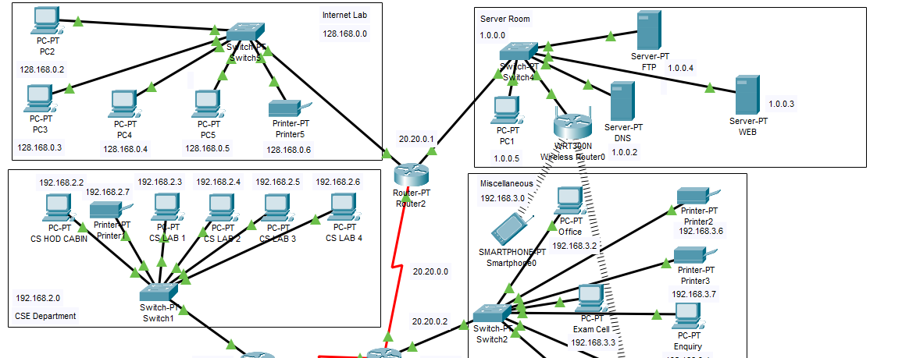
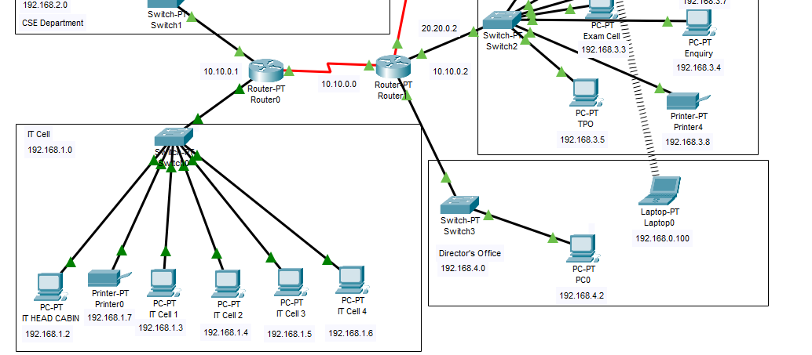

About Me
Pursuing my Bachelor's degree in Computer Science Engineering from Guru Gobind Singh Indraprastha University. As a passionate computer science student, I am constantly seeking to deepen my knowledge and skills in this field. I am eager to contribute my technical expertise to meaningful projects that make a difference in the world. In addition to my technical skills, I am a strong collaborator and am able to work effectively with colleagues and clients alike. I thrive in fast-paced and challenging environments, and am committed to producing high-quality work that meets the specific needs. I am a meticulous and organized individual with intuitive problem solving abilities. As I continue to grow and develop my career, I am excited to explore opportunities in fields such as cybersecurity, machine learning, and data science. I am eager to learn from and collaborate with other professionals in these areas, and to contribute my own unique perspective and skills to the real life projects. I am an avid reader and love to write stuff and listen to music in my free time. PERSONAL SKILLS: Quick Learner Ability to deal with people diplomatically Ability to translate business requirements into technical solutions Positive Attitude Innovative, creative and willing to learn new things Languages known: English, Hindi, Bengali, French (in their order of proficiency)
Skills
Technical Skills
- HTML
- CSS
- JavaScript
- Java
- C
- C++
- MS Office
Professional Skills
- Programming
- Project Management
- Problem Solving
Projects
Campus Computer Network
Under Cisco Networking Academy, I had a chance to build a simulation of a working computer network for a college using Cisco Packet Tracer. This College Network Scenario is about designing a topology of a network that is a LAN (Local Area Network) for a college in which various computers of different departments are set up so that they can interact and communicate with each other by interchanging data. To design a networking scenario for a college which connect various departments to each other’s, it puts forward communication among different departments. CNS is used to design a systematic and well-planned topology, satisfying all the necessities of the college (i.e., client). CNS come up with a network with good performance. This College Network mainly comprises of six departments, internet lab, CSE department, IT cell, server room, director’s office and miscellaneous. All the hosts are assigned with static IPs. No support for dynamic IP allocations. Each department consists of some wired pc, printers and one wireless laptop connect in a LAN network. This network has a wireless router in the server which provides the public Wi-Fi which is the college Wi-Fi. This Wi-Fi has WPA2 Personal security with passphrase as password. Students can also use their mobile phones with the college Wi-Fi. The outcome of the proposed system will be a fail-safe backbone network infrastructure which meets the requirements for readily available access to information and security of the private network, and also ensures optimized productivity when telecommunication services are accessed. The installed equipment allowed to organize high-speed wired and wireless Internet access throughout the whole complex as well as providing transfer of all types of data throughout the single optimized network.

